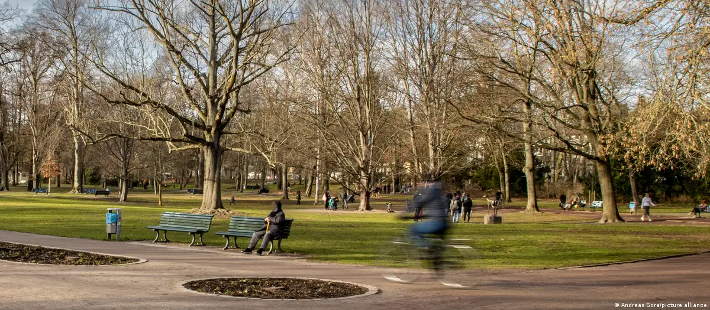

Tkaczyk News
SERWIS INFORMACYJNY
Zabójstwo w Berlinie. 5-latka miała też polskie obywatelstwo
O zabójstwo pięcioletniej dziewczynki podejrzewany jest 19-latek, który opiekował się nią i jej trójką rodzeństwa. Mężczyzna we wtorek (21.2.23) po południu był z dziewczynką i jej młodszym rodzeństwem na placu zabaw w dzielnicy Pankow, która położona jest w północnej części Berlina, o czym poinformowała rzeczniczka prokuratury. Dziewczynka została znaleziona nieco później nieprzytomna w pobliskim parku. Miała co najmniej jedną ranę kłutą. Została przewieziona do szpitala, ale nie udało się jej uratować. Od środy rano (22.2.23) trwa sekcja zwłok dziecka. 19-latek do tej pory nie odniósł się do zarzucanego mu czynu. Został oskarżony o umyślne spowodowanie śmierci, wydano wobec niego nakaz aresztowania. – Według obecnego stanu rzeczy motyw seksualny nie odgrywa roli – powiedziała rzeczniczka. Dokładne tło zbrodni jest nadal badane. Rzeczniczka relacjonowała, że 19-latek był z czwórką dzieci na placu zabaw, kiedy pięciolatka musiała skorzystać z toalety. Mężczyzna poprosił inne osoby będące na placu zabaw, żeby zwróciły uwagę na trójkę rodzeństwa i poszedł z pięciolatką do toalety. Następnie wrócił bez dziewczynki twierdząc, że ją zgubił. Osoby będące na miejscu poinformowały o zdarzeniu policję około godziny 15.00, po czym rozpoczęła się akcja poszukiwawcza z udziałem ponad 100 osób i helikopterem. Około godziny 17.40 odnaleziono nieprzytomną dziewczynkę w oddalonym o ok. 700 metrów parku. Dziecko zostało helikopterem przetransportowane do szpitala, gdzie zmarło. Niewiele później policja zatrzymała 19-letniego mężczyznę w pobliżu miejsca, gdzie znaleziono dziewczynkę, na obrzeżach parku. Podejrzany ma niemiecko-tureckie pochodzenie i jest znajomym rodziny. Jego matka i matka zabitej dziewczynki są zaprzyjaźnione, powiedziała rzeczniczka prokuratury. Ofiara, zgodnie z informacjami podanymi przez policję, miała polsko-niemiecko-tureckie obywatelstwo. Prokuratura na razie nie podała, czy rodzina dziewczynki i podejrzany mieszkają w dzielnicy Pankow czy w innych częściach Berlina. Stołeczna policja kryminalna jeszcze we wtorkowy wieczór rozpoczęła poszukiwania śladów w specjalnie oświetlonym parku. W środę rano miejsce na wzgórzu w parku, w którym znaleziono ciało, nadal było odgrodzone. Liczni policjanci zabezpieczali teren, a na miejscu pracowali technicy kryminalistyczni. Kilkudziesięciu policjantów przeszukiwało cały park – od miejsca znalezienia ciała w kierunku placu zabaw. Przeczesywali kijami i grabiami krzaki i liście. Szukali narzędzia zbrodni, którym miał być nóż. Nad parkiem krążył też dron, który wykonywał zdjęcia z powietrza. Przesłuchiwani mieli też być świadkowie. W pobliżu miejsca, w którym znaleziono ciało dziewczynki, ludzie już we wtorek wieczorem ustawili znicze, a na ścieżce położono żółty kwiatek i małą przytulankę. Również w środę rano zatrzymywali się tam ludzie, niektórzy płakali. Burmistrz Berlina Franziska Giffey (SPD) złożyła krewnym dziecka kondolencje. „Jestem wstrząśnięta” – napisała na Twitterze. Powiedziała, że jej myśli są z rodzicami dziewczynki i jej krewnymi.„Łamie mi to serce i jestem głęboko zasmucona”. Burmistrz berlińskiej dzielnicy Pankow, Soeren Benn, zatweetował: „To jest tak makabryczne, & straszne.Moje najgłębsze kondolencje dla krewnych”.
26.02.2024, 13:27